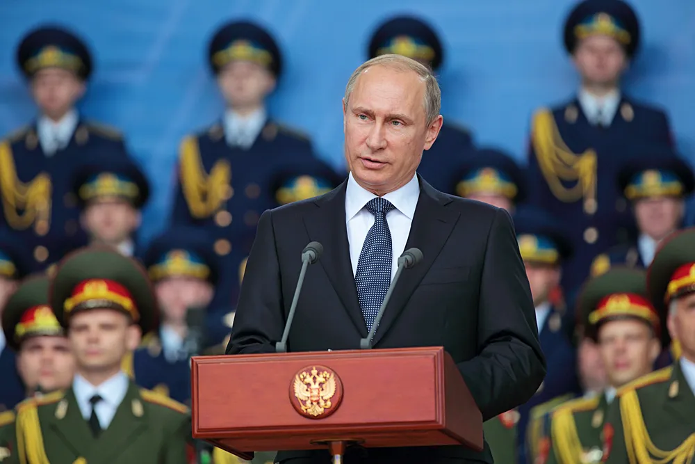

Russias Government
-
Return To Motherland
-
Next Fact
-

-
On December 25, 1991, the Soviet Union ceased to exist. The Russian Federation, formerly the Russian Soviet Federative Socialist Republic,
was one of 15 former Soviet republics to become independent. From this point onward, Russia began a chaotic transition from a communist dictatorship to a capitalist, multiparty democracy.
In 1993, a new constitution was ratified, formally making the country into a federal, democratic republic.
This constitution supposedly protects people’s fundamental human rights, such as freedom of expression and freedom of association.